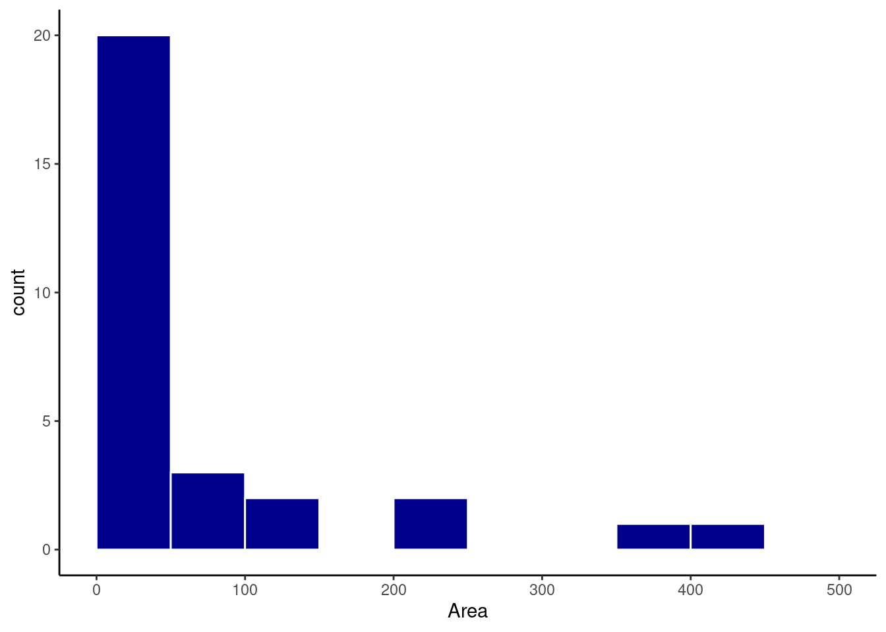

library(tidyverse)
library(flextable)
library(patchwork)
source('scripts/getmode.r')
source('scripts/assimetria_ggplot.r')5 Medidas de tendência central
Pacotes e funções utilizadas no capítulo
Tabelas de frequência e histogramas (Capítulo 4) permitem a visualização dos padrões de distribuição de uma variável quantitativa, evidenciando limites inferiores e superiores, faixas de valores mais ou menos frequentes etc. Neste capítulo, veremos medidas-resumo que possibilitam descrever a tendência central de um conjunto de dados. Algumas dessas medidas são a média aritmética, a mediana, a moda e o ponto médio.
5.1 Média aritmética
Considere a variável \(X\) com \(n\) elementos \(X_1\), \(X_2\), \(X_3\), \(\cdots, X_n\). A média aritmética (\(\overline{X}\)) é dada por:
\[\overline{X}=\frac{X_1+X_2+X_3+\cdots+X_n}{n}=\frac{\sum_{i=1}^n{X_i}}{n}\]
Exemplo
Seja a variável \(X\) abaixo:
Code
n = 5
set.seed(1)
X = sample(x = 1:10, size = n, rep = TRUE)\(X =\) {9, 4, 7, 1, 2}
\(X\) possui 5 observações e tem média:
\(\overline{X}=\frac{9 + 4 + 7 + 1 + 2}{5}\)
\(\overline{X}=\frac{23}{5} = 4.6\)
5.2 Mediana
É definida como o valor do meio de uma distribuição, de modo que metade dos valores estão abaixo e metade está acima da mediana. Se organizarmos a variável \(X\) em ordem crescente teremos:
Code
X = sort(X)
Xmed = median(X)\(X =\) {1,2 , 4 , 7,9}
sendo a mediana igual a \(4\).
Neste exemplo, temos \(n = 5\) observações. Se tivermos um número par de observações, teremos duas na posição central. Por exemplo se:
Code
set.seed(1)
X = sample(x = 1:10, size = 6, rep = TRUE)\(X =\) {9, 4, 7, 1, 2, 7}
vemos que após ordenarmos \(X\):
\(X =\) {1, 2, 4, 7, 7, 9}
teremos o \(4\) e o \(7\) como valores do meio.
Neste caso, a mediana fica como sendo:
\(\frac{4 + 7}{2} = 5.5\)
5.3 Moda
É definida como o valor mais frequente de uma distribuição.
Code
set.seed(1)
X = sample(x = 1:10, size = 6, rep = TRUE)Para \(X =\) {9, 4, 7, 1, 2, 7} a moda é 7, o valor que mais se repete na distribuição.
Nota
A moda nem sempre é única. Se vários valores repetem-se igualmente, teremos mais de uma moda na distribuição.
5.4 Ponto médio
É calculado com base nos dois valores extremos da distribuição (mínimo e máximo), sendo obtido por:
\[P_{medio}=\frac{X_{minimo} + X_{maximo}}{2}\]
Para \(X =\) {9, 4, 7, 1, 2, 7} o ponto médio é:
\(PM = \frac{1 + 9}{2} = \frac{10}{2} = 5\)
5.5 Efeito da assimetria sobre os descritores de tendência central
Cada um dos drescitores de tendência central descritos acima é mais ou menos sensível ao grau de assimetria de uma distribuiçãol. Em uma distribuição perfeitamente simétrica, onde as observações estão igualmente dispersas acima e abaixo do ponto central, os valores da média, mediana, moda e ponto médio coincidem. Por outro lado, pode ocorrer da distribuição ser assimétrica. Neste caso, a posição relativa dos descritores irá depender se a assimetria é à direita ou à esquerda. Esta discrepância ocorre devido à sensibilidade destes descritores a valores extremos na distribuição. O ponto médio é o mais sensível à presença de pontos extremos, seguido da média, mediana e a moda.
Code
# Ver função completa no arquivo 'scripts/assimetria_ggplot.r'
assimetria_ggplot()
Medidas de tendência central
Média aritmética: utiliza todo o conjunto de dados. Relativamente sensível a valores extremos;
Mediana: o valor do meio. Metade dos pontos está acima e metade abaixo da mediana. A mediana é uma medida resistente a valores extremos;
Moda: valor mais frequente. Se mais de um valor aparece com a mesma frequência, os dados têm uma distribuição multimodal;
Ponto médio: considera somente o valor mínimo e máximo. O ponto médio é fácil de calcular porém não utiliza a maioria do conjunto de dados e é muito sensível a valores extremos.
5.6 Obtendo medidas de uma tabela de dados
Importe a base de dados Reservatorios_Parana_parcial.csv.
res = read_delim('Reservatorios_Parana_parcial.csv',
delim = ',',
locale = locale(decimal_mark = '.',
encoding = 'latin1'))Medidas-resumo podem ser obtidas com função summarise
Vamos encontrar a média aritmética e a mediana da variável CPUE.
res %>%
summarise(CPUE_medio = mean(CPUE),
CPUE_mediana = median(CPUE)) %>%
flextable()CPUE_medio | CPUE_mediana |
12.70097 | 11.74 |
Os valores são parecidos, porém a média é um pouco superior. Provavelmente a distribuição deve ser ligeiramente assimétrica à direita. Podemos verificar isto por meio de um histograma.
cl_cpue = seq(0, 35, by = 5)
ggplot(res, aes(x = CPUE)) +
geom_histogram(breaks = cl_cpue,
fill = 'darkblue',
color = 'white') +
theme_classic()Alguns valores de captura próximos a \(30\) kg estão fazendo com que a média esteja um pouco acima da mediana.
Vamos verificar agora a média da variável Area dos reservatórios:
res %>%
summarise(CPUE_medio = mean(Area, na.rm = TRUE),
CPUE_mediana = median(Area, na.rm = TRUE)) %>%
flextable()CPUE_medio | CPUE_mediana |
64.7369 | 12 |
Para esta variável a discrepância é muito maior.
Medidas de tendência central
obs: tivemos que utilizar o argumento na.rm = TRUE para excluir do cálculo reservatórios com dados faltantes para Area.
cl_area = seq(0, 500, by = 50)
ggplot(res, aes(x = Area)) +
geom_histogram(breaks = cl_area,
fill = 'darkblue',
color = 'white') +
theme_classic()
Ao verificar o histograma, vemos que existe uma grande concentração de reservatórios com áreas até \(50\) \(km^2\), porém poucos reservatórios muito grandes com mais de \(200\) \(km^2\). Este grandes reservatórios deslocam a média aritmética à direita.
Podemos ver quais são estes reservatórios utilizando a função filter
r_grandes = res %>%
filter(Area >= 200) %>%
select(Reservatorio, Area)
r_grandes %>%
flextable()Reservatorio | Area |
Salto Santiago | 208.0 |
Capivara | 419.3 |
Chavantes | 400.0 |
Rosana | 220.0 |
Entre os 31 reservatórios temos 4 com áreas acima de \(200\) \(km^2\) (Salto Santiago, Capivara, Chavantes, Rosana). A influência destes reservatórios é maior para a média aritmética, pois esta é mais sensível a valores extremos do que para a mediana. Se calcularmos o ponto médio, veremos que esta influência é ainda maior.
res %>%
summarise(CPUE_medio = mean(Area, na.rm = TRUE),
CPUE_mediana = median(Area, na.rm = TRUE),
P_medio = sum(range(Area, na.rm = TRUE))/2) %>%
flextable()CPUE_medio | CPUE_mediana | P_medio |
64.7369 | 12 | 209.685 |
Se calculamos os descritores de tendência central sem estes reservatórios, vemos que a diferença entre os descritores diminui mas não desaparece, o que ocorre devido à elevada assimetria nesta variável.
res %>%
filter(Area < 200) %>%
summarise(CPUE_medio = mean(Area, na.rm = TRUE),
CPUE_mediana = median(Area, na.rm = TRUE),
P_medio = sum(range(Area, na.rm = TRUE))/2) %>%
flextable()CPUE_medio | CPUE_mediana | P_medio |
25.2028 | 7.2 | 69.535 |